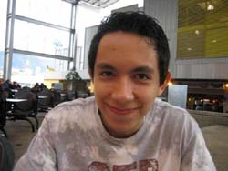

|
||
 |
||
 |
||
 |
||
 |
||
 |
||
 |
||
 |
||
 |
||
 |
||
 |
||
 |
||
 |
||
|
|
||

2006 Results and
Happenings
Davenport, Jacobs Tie At Fayetteville Swiss
Ten
players turned out for the December Swiss in Fayetteville on Dec. 23.
Eugene Davenport and Ambrose Jacobs each posted a 2.5/3.0 result in G/90
to share first place. Check
out the crosstable.
FM Daniel
Tapia Earns International Master Title in Colombia
|  |
Former North Carolina scholastic champ Daniel Tapia earned his International Master (IM) title recently at a sub-zonal in Colombia. Tapia finished clear first � by a full point - in a 32-player field at 7.5/9.0. Under the rules of the sub-zonal, the highest finishing player without the IM title would gain one with the tournament win. The 20-year-old Tapia will now advance to the Caribbean zonal in the Dominican Republic in March.
You may need to brush up on your Spanish, but you can read about the tournament. You may also check out the games from the tournament.
FIDE will make the IM title official when it takes action at the next FIDE Congress. Tapia relocated to the South American country in 2005. He graduated from Charlotte's Harding University High School and finished first, or tied for first, in three straight North Carolina K-12 Scholastic Championships. He represented the state at two Denker Tournament of High School Champions.
320 Players In Charlotte;
Jacob Parrish Wins Southern Scholastic
Almost 320 players jumped into
the action at the 19th Annual Southern Scholastic at Vance High
School Dec. 16-17 in Charlotte. In the K-12 Section, Greensboro�s
Jacob Parrish reeled off a 5-0 score in G/90 to take first place.
In K-8, Joshua Mu went a
perfect 5-0 for first place. In K-5, Jordan Ware and Ethan Hollandsworth
both went 5-0 to tie for first place. Ware got the nod on tiebreaks. In
K-3, Ken Chu was 5-0 to take first place.
The team winners were Charlotte
schools:
K-12 � Vance HS
K-8 � Randolph MS
K-5 � Barringer
K-3 � Barringer, Smith Academy and Metrolina Regional (Barringer got the
nod on tiebreaks)
-- Check out
the crosstables
Gary Newsom Goes 3-0 To Take Bertucci�s 17
Cornelius� Gary Newsom went a perfect 3-0 in G/75 to capture first place at Bertucci�s 17 in Charlotte Dec. 16. He pocketed $80 for his efforts. Shawn Pealer and Patrick McCartney were second at 2-1. Eight players participated in the action. Check out the crosstable.
FM Ron Simpson Goes 4-0 To Claim Greenville Open
FM Ron Simpson turned in a perfect 4-0 result to grab first place at the Greenville Open 22 Dec. 9. Maurice Dana and Kenny Jackson tied for second at 3.0/4.0. Twelve players competed in the action. Check out the crosstable.
Marsh, McNeill Capture Sections at Asheboro Open 19
Tennessee�s Matthew Marsh reeled off three wins of G/75 to capture the Championship Section of the Dec. 9 Asheboro Open. Marsh took home $150 for his efforts. Fayetteville�s Larry Williams was clear second at 2.5/3.0. In the Candidates Section, Asheboro�s Jonathan McNeill posted a 3-0 result to win $150. Jeff McAdams and Anish Shah were second at 2.5/3.0. Twenty-four players participated. Check out the crosstable.
Jones, Wheeless Each Go 4-0 To Grab First In Lenoir
Bryson City�s Ellis Jones and Charlotte�s Randy Wheeless each rolled up a 4-0 mark to share first place at the Holiday Foothills Chess Tournament Dec. 9 at West Caldwell High School in Lenoir. Brad Reese and Jayson Miller were among the top class winners elsewhere in the tourney. Twenty-six players participated in the event. The tournament raised several dozen canned items for the food drive being held at the school to benefit the community � and another $150, which will be used to help sponsor a community family. Check out the crosstable.
Williams, Morris Tie At
Fayetteville Quad
An impromptu quad broke out Dec. 2 in Fayetteville. Larry Williams and Gary Morris each scored 2.0/3.0 to tie for first place. Check out the crosstable.
Zhang Takes K-12 Section in Winston-Salem
A
total of 64 players participated in the Winston-Salem Scholastic Chess
Association Fall 5 tournament Dec. 2. In the K-12 section, Benjamin
Zhang went a perfect 4-0 in G/45 to take first place. In the K-8 Section,
Zak Brown and Joshua Perry tied for first at 4-0. In the K-5 Section,
Carolina Folz and Joshua Sailer tied for first at 3.5/4.0. Check
out the crosstable.
Crowd Of Almost
100 Plays In Hendersonville
Almost 100 players
turned out for the Immaculata Swiss Dec. 2 in Hendersonville.
Players were grouped in eight-player sections for three rounds of G/75.
Despite many scholastic players, the field also included four players
above 2200. Winners in the respective sections were: FM Andrey Chumachenko,
Judd Pires, Vladimir Besirovic, Luke Dewitt, Nick Furigay, Joe Corbett,
Alvin Zhang, Jordan Mooney, Eddie Wahler, Bruce Norville, Alex Williams,
Joey Bullis and Kob Gerdsawat. Check
out the crosstable.
Jodrey Claims Championship Section In Durham
Almost 180 players turned out for the Durham Academy Fall Chess Challenge Nov. 18. In the Championship Section, Jamestown�s Joshua Jodrey went a perfect 3-0 for first place. In the K-12 Under 1400 Section, Connor Henry Labean and Drew Clary tied at 3.4/4.0. In the K-12 Under 1100 Section, Tian-Yi Damien Jiang was 4-0 to take the top spot. In the K-6 Section, Kevin Chen and Kevin were both 4-0 to tie for first. In the K-3 Section, Sonio Yanis Kum went 4-0 for first place. In the K-1 Section, Scott Hallyburton went 4-0 for first place. Check out the crosstable.
Jones, Sailer Finish First At Mayberry Quads
Eight players filled out a pair of quads Nov. 18 at the Mayberry Chess event in Mount Airy. In the top quad, Ellis Jones went 2.5/3.0 to claim first place. In the other quad, John Sailer was a perfect 3-0 to claim the top spot. Check out the crosstable.
Wheeless, Newton-Conover HS Take Top Scholastic Honors
A
total of 32 players from eight schools participated in the Western High
School Regional in Newton Nov. 18. As for the individual results,
Charlotte homeschooler Amelia Wheeless was a perfect 4-0 to claim the top
overall player. Jayson Miller from Hibriten HS and Marshall Faraday from
Hunter Huss HS were tied for second at 3.5/4.0.
Newton- Conover HS took the overall team title. Other team winners: Hunter
Huss HS, top 3A team; Hibriten HS, top 2AA team; Maiden HS, top 1A team;
and Charlotte Home School, top at-large team.
Check out the crosstable.
Thomas Paradis Wins Bertucci's 16 In Charlotte
Charlotte scholastic player Thomas Paradis posted two wins and a draw in a tough field to claim $80 and first place at Bertucci's 16 Nov. 18 in Charlotte. Patrick McCartney, Gary Newsom and Virginia's Tracy Callis tied for second. Eight players participated. Check out the crosstable.
Maurice Dana Perfect At 4-0 At Greenville Open 21
NM Maurice Dana went a perfect 4-0 to capture first place at the Greenville Chess Open 21 on Nov. 11. Dana won $150 for his efforts. Joshua Taylor and Micah Tucker tied for second with a 3-1 record. Thirteen players participated in the tournament. Check out the crosstable.
Chumachenko, Mabe Tie At The Top At Carolinas Challenge
Charlotte players FM Andrey Chumachenko and Chris Mabe tied for first with 4/5 at the Carolinas Challenge Nov. 10-12 in Fort Mill, S.C. South Carolina players took the class titles: James MacDougall in the A Section; Carl Vero in the B Section; Bob Halliday in the C Section and Josh Nissemboim in the D/E Section. A total of 42 participated in the action. Check out the crosstable.
Junior
Open In Charlotte Draws More Than 160 Students
More
than 160 players turned out Nov. 11 for the CMSCA Junior Open at
Vance High School in Charlotte. In the 19 and Under Section, Joshua Mu
took first place with a 2.5/3.0 mark in G/60. In the 16 and Under Section,
Chang Sun and Robby Broadbent went 3-0 to tie. Sun took first in a blitz
playoff.
In
the 12 and Under Section, William Champion, Robin Yopp, Ean James Kitchens
and Walter Sypniewski all tied at 3-0. Champion took first in the blitz
playoff. In the 10 and Under Section, J.P. Flynn, Jordan Ware, Anders
Bright, Zachary Bright, Justin Yang and Micah James Terrell all went 3-0.
Flynn took first in the blitz playoff. In the 8 and Under Section, Seth
Taylor-Brill, George Hawk, Jay Parth Pakala, Chad Moody, Avery Feagans and
Ethan Sevigny all went 3-0. Taylor-Brill took first in the blitz playoff. Check
out the crosstable.
Mattison,
Vaughn Go 3-0 To Take Respective Sections in Asheboro
Henry
Mattison reeled off three wins to capture the Championship Section of the
Asheboro Open 18 Nov. 11. In the Candidates Section, Kirk Vaughn went
a perfect 3-0 in G/75 to take first place. Seventeen players participated
in the action. Check
out the crosstable.
Four Players Tie For First In Fayetteville
A total of nine players participated in the November Two Knights Swiss in Fayetteville on Nov.4. There was a logjam for first place with four players - Eugene Davenport, Jonathan Lang, Tom Hales and Tanner Hogue � tying for the top spot. Check out the crosstable.
Simpson And Cloete Tie For First In Morehead City
FM Ron Simpson and Eugene Cloete both posted 3 wins and a draw to share the top spot at the Blackbeard Open Oct. 28 in Morehead City. Twenty players participated in the action. Check out the crosstable.
Williams And
Morris Tie In Fayetteville Tournament
A total of 10
players kicked off a return to tournament chess in Fayetteville Oct. 28
at the Two Knights Swiss. Larry Williams and Gary Morris tied for first
place while Daniel Kulic took the Under 1600 class prize. Check
out the crosstable.
Quad Squads Invade Lenoir for Fall Foothills
Twenty players filled out five quads at the Fall Foothills event Oct. 28 at Hibriten High School in Lenoir. Players winning their sections with perfect 3-0 scores in G/60 were: Randy Lovelace, Jack Shaver, Kent Wheeless and Robbie Earp. In the remaining section, Bradley Reese and Randy Wheeless tied for first with 2.5/3.0 Check out the crosstable.
No Defeat For GM Maurice Ashley At Greensboro Simul
GM
Maurice Ashley held a 40-board simul on Oct. 27 at North Carolina
A&T in Greensboro. Ashley went 39-0-1, with Greensboro�s Stephen
Maynard grabbing the lone draw.
White � Ashley
Black
� Maynard
1. d4 Nf6 2. c4 g6 3. Nc3 d5 4. cxd5 Nxd5 5. e4
Nxc3 6. bxc3 Bg7 7. Be3 c5 8. Bb5+ Bd7 9. Bxd7+ Nxd7
10. Ne2 cxd4 11. cxd5 0-0 12. 0-0 Nb6 13. Rc1 Rc8
14. Qb3 e6 15. a4 Qd7 16. a5 Qa4 17. Qxa4 Nxa4
18. Rb1 Rc2 19. Ng3 b6 20. Rb4 Ra2 21. axb6
Nxb6 22. d5 exd5 23. Bxb6 axb6 24. exd5 Rd2 25.
Rxb6 Rxd5 draw agreed 1/2-1/2
Jay Goss Claims
Top Spot At Wildcat Scholastic
More than 150 players competed in the Wildcat Scholastic 4 in Chapel Hill Oct. 21. In the K-12 Open Section, Jay Goss went 4-0 to capture first place. In the K-12 Under 1000 Section, Robert Dallara, Alan Lindsey and Jordan Baker all tied at 4-0 to share the top spot. In the K-5 Section, Tian-Shun Jiang went a perfect 5-0 to claim first place. In the K-3 Section, Kevin Wu and Sarah Kirchner-Barney were knotted at 4.5/5.0 to share the top spot. Check out the crosstable.
Charlie Hall
Wins Quad in Mt. Airy
Charlie Hall beat back the competition at 3-0 to claim the G/30 quad at the Mayberry Quad 2 in Mt. Airy on Oct. 21. Check out the results.
Good Turnout Highlights Spirited Play At N.C. Open in Greensboro
More than 160 players joined the action at the N.C. Open Oct. 13-15 in Greensboro. In the Open Section, Asheville FM Miles Ardaman posted a 4.5/5.0 score to claim sole first and become state champion. Charlotte FM Andrey Chumachenko was clear second. Ardaman has now become the state champion in five states - North Carolina, South Carolina, Georgia, Texas and Florida.
In the Under 2000 Section, Troutman�s Gary Branton went 4.5/5.0 to take first. In the Under 1800 Section, Bobby Waddell, Joshua Taylor and John Brooks all scored 4.0/5.0 to tie for the top spot. In the Under 1600 Section, Luis Guzman went 4.5/5.0 to take first. In the Under 1400 Section, Stephen Maynard posted a 4.5/5.0 result to claim first place.
In the Under 1200 Section, Connor Labean was a perfect 5-0 to grab first place. Hiroki Wakiya was victorious in the K-12 Section of the scholastic side event. Eric Noden claimed the K-8 event. Check out the crosstable.
New officers were elected at the N.C. business meeting:
President �
Randy Wheeless
1st VP � Victor Beaman
2nd VP � Bernard Baker
Sec./Treas. � Gerben Hoekstra
FM
Simpson
Goes 3-0 To Take Asheboro Open 17
FM
Ron Simpson reeled off a perfect 3-0 mark to claim the top spot in the
Championship Section of the Asheboro Open 17 Oct. 7. In the
Candidates Section, there was a logjam with Stephen Pizzo, Connor Labean,
Rodney Folz and Andrew DeJong all finishing with a 2.5/3.0 mark to tie for
first place. Check
out the crosstable.
Lang Goes 3-0 To
Take Durham Academy Master Trek
Jonathan Lang reeled off
three straight wins to take the Champion Section of the Durham Academy
Master Trek event Sept. 30. In the Premier Section, Nishanth Shah
went a perfect 3-0 to take first place. In the Booster Section, Tian-Shun
Allan Jiang and Connor Labean both posted 3-0 scores to share the top
spot. Check
out the crosstable.
FM Ron Simpson
Sweeps To Win In Greenville
FM Ron Simpson
turned in a perfect 3-0 score to capture first place in the Open Section
of the Greenville Chess Open 20 Sept. 30. In the Under 1600
Section, Victor Beaman reeled off three wins for sole first place. Twelve
players participated in the action. Check out the
crosstable.
Gmeiner,
Poppante Tie For First In Winston-Salem
Michael Gmeiner
and Leo Poppante both scored 3-1 in G/45 to tie for first in the K-12
Section at the 64 Squares Scholastic Sept. 30 in Winston-Salem. In
the K-8 Section, Praveen Suthaharan and Yimo Chen posted a 3.5/.5 score to
share first place. In the combined K-3/K-5 Section, Joshua Sailer posted a
perfect 4-0 score to take first place. Matthew Moore went 3-0 to take the
unrated K-3/K-5 Section. Check out the
crosstable.
Scholastic Chess Seasons Kicks Off In Charlotte
Charlotte-Mecklenburg kicked off the scholastic chess season with its annual unrated tournament Sept. 23 at Charlotte�s Vance High School. Amelia Wheeless won the K-12 section; Robin Yopp claimed the K-8 section and Adam Watkins took the K-3 section. In the K-5 section, Arren Sevigny and Benedict Liu tied for first place. Liu got the nod on tiebreaks. About 70 players participated. Check out the crosstable.
NM Alyiev Goes 3-0 To Win At Bertucci's 15
South Carolina NM Timur Alyiev fired off three
straight wins to capture the Top Section of Bertucci's 15 on Sept. 16
in Charlotte. Alyiev took home $100 for his effforts. In the Lower
Section, Charlotte's Kevin Huang and Ellis Jones both went 2.5/3.0 to
share the top spot. A total of 15 players participated in the action.
Check out the
crosstable.
Baldwin, Sailer Win Quads In Mt. Airy
Mt. Airy hosted eight players
for two full quads at the Mayberry Chess Quad 1 on Sept. 16. In the
top quad, Scott Baldwin posted a 2.5/3.0 result to take clear first. In
the second quad, John Sailer reeled off three wins to take first place. Check
out the crosstable.
Maurice Dana Grabs Top Spot In Greenville
NM Maurice Dana from Newport reeled off four straight wins to grab
first place in the Open Section of the Greenville Chess Open on Sept.
9.
Dana won $120 for his efforts. Gordan Ray took the Under 1400 Section with
a
3.5/4.0 result. Check
out the crosstable.
Adam Holmes Takes Clear First in Asheboro
Chapel Hill's Adam Holmes reeled off three straight wins in G/75 to capture the Championship Section of the Asheboro Open 16 Sept. 9. Jonathan Lang took clear second at 2.5/3.0. In the Candidates Section, Jeff McAdams, Mark Stout and Zachary High all tied for first at 2.5/3.0. A total of 29 players participated. Check out the crosstable.
Trower, Holmes
Share Top Spot at Fake Copper Blanket
Charlotte�s Todd
Trower and Chapel Hill�s Adam Holmes posted two wins and a draw in G/90
to tie for first place in the Open Section of the Fake Copper Blanket Aug.
26 in Charlotte. In the Under 1800 Section, Amelia Wheeless took sole
first with a 2.5/3.0 result. In the Under 1400 Section, Peter Giannatos
and J.P. Flynn shared first place with 2.5/3.0. In the Under 1200 Section,
Ashraf Azihan went a perfect 3-0 to grab the top spot. In the Under 1000
Section, Ryan Lee and Elinos Alton Whitlock reeled off a 4-0 mark in G/45
to share the top spot. A total of 77 players participated. Check out
the crosstable.
Neal Harris Ties For First In Virginia
North Carolina NM Neal Harris tied for first place at the SouthWest Virginia Open Aug. 18-20 in Salem, Va. Almost 50 players participated in the event. Check out the crosstable.
Pealer, McCartney Share Bertucci�s 14 Title
Charlotte�s Shawn Pealer and Patrick McCartney each
posted two wins and a draw to share the top spot in the Top Section at
Bertucci�s 14 on Aug. 19 in
Patrick, Tiselsky Go
3-0 In Asheboro Open 15
Vann Alan Patrick and Eugene
Tiselsky each went a perfect 3-0 to tie for first place in the
Championship Section at the Asheboro Open 15 on Aug. 12. In the Candidates
Section, Jonathan Lang and Yuki Wakiya each went 2.5/3.0 to tie for first.
In the Club Section, Hiroki Wakiya went a clean 3-0 to take first place. A
total of 33 players joined in on the action. Check
out the crosstable.
Taylor, Jackson Tie
For First At Greenville Open
A
total of 10 players participated in the action at the Greenville Open Aug.
12 in Greenville. Joshua Taylor and Kenneth Jackson tied for first with a
3.0/4.0. Each won $113 for their efforts. Check
out the crosstable.
N.C.'s Nelson Lopez Wins Denker High School Championship
Youngsville's
Nelson Lopez took on the best high school players in the country and came
out a winner � going 5.5/6.0 to win the Arnold Denker Tournament of High
School Champions, Aug. 6-11, in Oak Brook, Ill.
Nelson,
a two-time winner of the N.C. Scholastic Championship, was seeded 10th in
ratings at the beginning of the tournament. But he fired off two important
wins in the last two rounds to take the title. Check out coverage at U.S.
Chess. Also,
check out the crosstable for the event.
Craig Jones Goes 4-0
At TALMA 2 in Raleigh
A total of 39 players
took part in the TALMA 2 in Raleigh Aug. 5. In the Open Section, NM Craig
Jones of Cary went a perfect 4-0 to grab the top spot. In the Under 1500
Section, Dion Cassio went 3.5/4.0 to take first place. Benjamin Jones took
the Under 1500 scholastic trophy with a flawless 4-0 score. Nishanth Shah
took the Under 1300 scholastic trophy with a 3-1 score, and Tian-Shun
Jiang also went 3-1 to grab the Under 1100 scholastic trophy. Check
out the crosstable.
LPO Attracts Almost 200 Players To
Greensboro
Almost 200 players attended the 2006 LPO
in Greensboro July 28-30. In the Open Section, Virginia NM Rusty Potter
claimed first place with 4.0/5.0. In the Under 2200 Section, Virginia�s
Adithya Balasubramanian took sole first at 4.0/5.0. In the Under 2000
Section, Georgia�s William Stewart went a perfect 5-0 for first place.
Scholastic Players
Go Quick In Winston-Salem
A total of 24
players competed in the WSSCA Summer
Quick-Rated tournament July 29
in Winston-Salem. In the
combined K-12/K-8 Section, Michael Gmeiner of Yadkinville was the top high
schooler at 4.5/5.0. Yimo Chen of Jamestown was top middle schooler. In
the combined K-3/K-5 Section, Ryan Folz of Durham and Sarah
Kirchner-Barney of Fuquay-Varina were the top K-5 players. Anish
Kottu was the top K-3 player. Check out the crosstable.
Sailer Goes 4-0 At
Summit School Camp
John Sailer reeled off
a perfect 4-0 mark in rated games during the chess camp at the Summit
School in Winston-Salem July 24-28. Jake Einstein took sole second place
at 3.5/4.0. Check
out the crosstable.
Timmel, Cloete Tie For First At East Carolina Chess
Open
Pealer
Slices The Competition At Bertucci�s 13
Patrick Has
Perfect Day To Grab Asheboro Title
56 Players Go
For Immaculate Moves in Hendersonville
A total of 56
players squared off for three rounds of G/75 July 15 at the
Imacculata Swiss in Hendersonville. Players going 3-0 to win their
eight-player sections outright were: Reid Motter, Angelia Campbell, Dylan
Roswech, Ian Roswech and Richard Thomas. The top two sections had ties
with two players at 2.5/.5: Brad McDanel and Mark Bogart in one section;
Dan Horwitz and Amelia Wheeless in the other. Check
out the crosstable.
Simpson Scores Another First In Greenville
Cohen Cruises To TALMA 1 Title
Bob
Cohen reeled off a perfect 5-0 to capture first place at the TALMA 1 on
June 24 in Raleigh. The event was structured to allow players to play as
few, or as many, games as they wished. Twenty-six players joined in the
action. Check
out the crosstable.
Wakiya Ties For First In Atlanta Tournament
McCartney, Paradis Share Bertucci's 12 Crown
Chumachenko
Goes 3-0 To Grab Asheboro Open 13
FM Andrey
Chumachenko reeled off a perfect 3-0 mark to capture first place in the
Championship Section of the Asheboro Open 13 June 10. In the
Candidates Section, both Robin Johnston and Milton Kicklighter each posted
3-0 results to share the top spot. Twenty-four players participated in the
action. Check
out the crosstable.
Simpson Tames
Field To Take First In Greenville
Cloete Grabs The Loot At Blackbeard Open 3
Eugene Herman Cloete fired off three wins and a draw to capture first place at the Blackbeard Open 3 on June 3 in Morehead City. Noteworthy, was the return of NM Mathias Moersch, who took a bye in the first round and drew Cloete in the final round to finish with 3.0/4.0. This was his first tournament in 10 years. Twenty players joined in on the action. Check out the crosstable
NM Klaus Pohl
Camps Out In First At Saluda
Thirty players invaded the Orchard Lake Campground in
Saluda on June 3 for some tournament chess action. In the Open Section,
South Carolina NM Klaus Pohl scored three wins a draw to capture first
place. James Hyde managed to scratch out a draw against Pohl.
In the Under 1300 Section, Shelby�s Curtis Morrison and
South Carolina�s Kenzie Moore posted three wins and a draw to share the
top spot. In the Under 800 Section, Bruce Norville went a perfect 3-0 to
claim first. Check
out the crosstable.
Pealer Takes Top Spot At
Bertucci's 11
Charlotte's Sean Pealer dispatched of the competition and reeled off three straight wins to take the Top Section of Bertucci's 11 May 20 in Charlotte. Pealer pocketed $100 for his efforts. In the Lower Section, Jiri Janko went 2.5/.5 to capture the top spot. Fourteen players participated in the action. Check out the crosstable.
Young Players Grab Top
Prizes In Denver
North Carolina's youngest chess
players turned in stellar performances at the 2006 Burt Lerner National
Elementary (K-6) School Championship in Denver May 12-14.
In the K-3
Championship, Charlotte's Ken Chu tied for first place with 6/7 -- placing
8th in a 9-way logjam at the top. In the K-5 Championship, Joshua Mu took
11th spot, while Robin Yopp nabbed 21st spot among 281 players. Yopp
helped Charlotte's McAlpine Elementary grab 9th place in the team
competition.
In the K-6 Under 1000, Sneha
Chikkala finished fourth. In the K-5 Under 900, Seth Taylor-Brill nabbed
seventh place. In the K-3 Under 800, Srika Chikkala took 6th place.
Sample Claims Top Spot In
Greenville
Roger Sample posted three wins
and a draw to capture the Top Section of the Greenville Open 15 on May
13.
In the Under 1500 Section, John Wehrenberg reeled off a perfect 4-0 to
claim the top spot. Sixteen players participated in the action. Check
out the crosstable.
Michael Carroll A Perfect
3-0 In Asheboro
Michael Carroll went a perfect 3-0 in G/75 to claim first place at the Asheboro Open 12 on May 13. Fifteen players joined in the action. Check out the crosstable.
Craig Jones Captures N.C.
Invitational With 5-0 Mark
Cary's NM Craig Jones defended his N.C. Invitational title in style as he reeled off a perfect 5-0 result against a rugged field to capture the title April 22-23 at Duke University in Durham. FM Ron Simpson and NM John Kirby tied for second with 2.5/2.5 marks. The rest of the field included: NM Neal Harris, Nelson Lopez II and John Timmel. Check out the crosstable.
Lang Grabs K-12 Top
Spot In Winston-Salem
Jonathan Lang posted a 3.5/4.0 result in G/45 to capture the K-12 section
at the Winston-Salem Spring 4 scholastic tournament April 22. In the K-8
section, Tian-Yi Damien Jiang went a perfect 4-0 to claim the top spot. In
the K-5 section, Seth Taylor-Brill posted a 4-0 mark for first place. In
the K-3 section, Ian Gatland went 3-0 in three rounds to take first. Sixty
players participated in the action. Check
out the crosstable.
Trower, McCartney Share
Bertucci's 10 Title
Play Rated Games At UNC
Charlotte Starting April 27
Johnston Goes Undefeated At
Asheboro Open 11
Robin Johnston posted a perfect
3-0 mark in G/75 to grab sole first at the Asheboro Open 11, April 8, in
Asheboro. Jacob Parrish claimed clear second with a 2.5/3.0 mark. Sixteen
players participated in the action. Check
out the crosstable.
Three Go Undefeated At N.C.
Class Scholastic In Newton
Nelson Lopez Grabs Open
Section At Wolfpack Open 6
Nelson Lopez II posted a
2.5/3.0 result in G/90 to take sole first in the Open Section of the
Wolfpack Open 6, April 1, at N.C. State University in Raleigh. In the
Under 1800 Section, Amir Hosseini went 3-0 to take first place.
Three Tie At Morehead City's
Blackbeard Open 2
John Timmel, Eugene Herman Cloete and Roger Sample all posted three wins and a draw to share the top spot at the Blackbeard Open 2, April 1, in Morehead City. Twenty-two players participated in the action. The tournament also attracted some new players - eight were making their debut in tournament chess action. Check out the crosstable.
McCartney Takes Top Spot At Bertucci's
9
Charlotte's Patrick McCartney posted two wins and a draw to claim sole first in the Top Section at Bertucci's 9, March 25, in Charlotte. McCartney won $100 for his efforts. In the Lower Section, Viktor Ozherelyev went a perfect 3-0 to claim the top spot and $100. Check out the crosstable.
Scholastic Action Hot And
Heavy In Henderson County
About 100 scholastic players
joined the action at the Henderson County Scholastic Championship, March
25, at Apple Valley Middle School. In the Championship Section, brothers
Matthew and Dan Horwitz from Hendersonville posted a score of 2.5/3.0 in
G/75 to tie for first. Dan was awarded the $500 Henderson County chess
scholarship for his efforts.
Five Players Tie At
U.S. Masters In Hendersonville
Five players finished with identical 6.5/9.0 results to share top prize at
the 2006 U.S. Masters Chess Championship held March 11-19 in
Hendersonville.
NM Daniel Ludwig of Florida, IM Giorgi Margvelashvili of the Republic of
Georgia, IM Ron Burnett of Tennessee, FM Bryan Smith of Pennsylvania and
FM Andrey Chumachenko of Charlotte all shared top prize money.
Ludwig was declared the winner by tiebreaks. But by paying their $75
qualifying fee, Burnett and Smith grabbed the qualifying spots to the 2007
U.S. Championships. Thirty-nine players from 15 states and 5 countries
competed in the event. Check
out the crosstable.
In the Sub-Masters event (held at the same time), Hendersonville�s
Matthew Horwitz took clear first with an 8.0/9.0 finish. Charlotte�s
Joshua Mu was clear second at 7.0/8.0. Check out the crosstable.
FM Chumachenko Goes
Undefeated In Asheboro
Laura Lee Wins Polgar
Qualifier With 4-0 Result
Nelson Lopez II Repeats As K-12
Champ In State Scholastics
About 500 players invaded the
Charlotte Convention Center Feb. 25-26 for the 2006 North Carolina
Scholastic Championships.
In The K-12 Open Section, Wake
Forest�s Nelson Lopez II went a perfect 5-0 in G/90 to capture his
second straight title. He will represent the state at the Denker
Tournament of High School Champions in Oak Brook, Ill. in August.
In the K-12 Under 1300 Section,
Chapel Hill Zili Shi, Charlotte�s Peter Giannatos, and Chapel Hill�s
David Zhuo were all declared co-champions after going 4.5/.5.
In the K-8 Section,
Charlotte�s Kevin Huang, Concord�s Samuel Xin and Fayetteville�s
Carter Benge all posted 4.5/.5 scores to become co-champs. In the K-8
Under 1000, Charlotte�s William Champion and Durham�s Robert Jackson
both went 5-0 to become co-champs. In the K-5 Section, Charlotte�s Robin
Yopp IV posted a 6.5/.5 score in G/60 to claim sole first and the
championship. In the K-3 Section, Charlotte�s Ken Chu went a perfect 7-0
to claim the championship crown.
Check
out the complete crosstables.
Team winners were:
K-12 Open � East Chapel Hill HS
K-12 Under 1300 � East Chapel Hill HS
K-8 Open � J.M. Robinson Middle (Charlotte)
K-8 Under 1000 � Durham Academy
K-5 � McAlpine Elementary (Charlotte)
K-3 � Durham Academy
Reid Wins K-12 Section In
Winston-Salem
Greensboro�s Brandon Reid reeled off four straight wins
to capture the K-12 Section of the Winston-Salem Scholastic Chess
Association�s Winter Chess 4 on Feb. 18. More than 60 players
participated in the action.
In the K-8 Section, Elliott Cartee went 4-0 to take first
place. In the K-5 Section, Ethan Hollandsworth posted a 4-0 mark to claim
first place. In the K-3 Section, Joshua Sailer was 4-0 to take the top spot.
Check
out the crosstable.
Chumachenko Goes Undefeated To
Capture Bertucci�s 7
New
Charlotte resident FM Andrey Chumachenko turned in three straight wins of
G/75 to walk away with the Top Section at Bertucci�s 7 on Feb. 18. In
The Lower Section, Asheboro�s Tom Hales went 2.5/.5 to capture first
place. Fourteen players participated in the action. Check
out the crosstable.
Alex Cibotarica Takes Top Quad In
Lenoir
Seventeen players joined the
quad squads at the Foothills Holiday 2 tournament Feb. 18 in Lenoir.
Players were divided into four-players quads for three rounds of G/60.
Alex Cibotarica of Hickory was the only player to win his quad outright.
Lopez
Wins Champion Section at Durham Academy Scholastic
About
200 students turned out Feb. 11 for the Durham Academy Winter
Scholastic. In the Champion Section, Nelson Lopez II went a perfect 3-0 to
claim sole first.
Junior Open Draws 150
Players In Charlotte
About 150 players showed up at
Vance High School for the CMSCA�s Junior Open, Feb. 4, in Charlotte. In
the Under 18 Section, Jay Desai posted a 3-0 mark in G/60 to claim first
place. In the Under 16 Section, Amelia Wheeless, Chang Sun and Kevin
Valakuzhy reeled off three wins to share the top spot.
Wildcat Scholastic Attracts Crowd In Chapel Hill
GM Wojtkiewicz Claims Top
Spot At Land Of The Sky
About 200 players fought it out
at the competitive Land of the Sky tournament Jan. 27-29 in Asheville. In
the Open Section, Maryland GM Aleks Wojtkiewicz posted four wins and a
draw to take crown. In The Under 2200 Section, Iron Station's NM Justin
Daniel and Pennsylvania�s Brian Polka went 4.5/.5 to share the top spot.
Greene, Horwitz High School
Winners In Charlotte
NM Daniel And
Eubanks Share Crown At Bertucci�s 7
Iron Station�s NM Justin Daniel and Columbia, S.C.�s
Keith Eubanks both posted two wins and a draw in G/75 to share first place
at Bertucci�s 7 in Charlotte on Jan. 21. Both players pocketed $75 each.
Eleven players competed. Check
out the crosstable.
Carter Benge Wins K-12 Open
Section In Cary
Fayetteville�s Carter Benge
went 4-0 to capture first place in the K-12 Open Section of the Triangle
Area Scholastic Chess Association I Tournament Jan. 21 in Cary.
FM Simpson, Stephenson Come Out On Top In Greenville
FM Ron Simpson went a perfect 4-0 to capture the Open Section of the Greenville Chess Open 11 Jan. 14. Alan Stephenson went a strong 3.5/.5 to take the Under 1800 Section. Both players earned $120 for their efforts. Check out the crosstable.
Timmel And Jodrey Share Top
Spot In Asheboro
Record Crowd Turns Out For 17th
Pawndemonium
A record crowd of 110 players raised the roof at the
17th Annual Pawndemonium scholastic tournament Jan. 7 in Asheville,
sponsored by the Asheville Kiwanis Club.
Quad Squad Invades South
Caldwell HS
Trio Of Players Tie At Asheboro Open 7
Three players tied for first place at the Asheboro Open 7 Dec. 17. FM Ron Simpson, David Pecora and Vann Alan Patrick all scored 2.5/3.0 in three rounds of G/75 in the Top Section. In the Lower Section, N.C. State TD Charles Yu went a perfect 3-0 to grab the top spot. Check out the crosstable.

Send comments, questions, or problems relating to the website to the webmaster.
Copyright © 2001-06, North Carolina Chess
Association